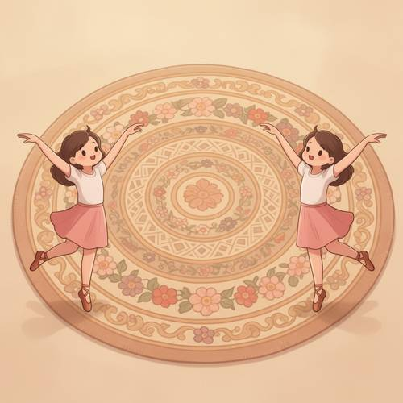
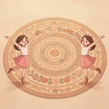

Entity Layout — Generating pictures: On the left and right sides of the screen, there
Generating pictures: On the left and right sides of the screen, there is a girl in similar posture. They are dancing on a huge circular carpet in a soft cartoon illustration style.


Judge — Direct
- PASSEntity Layout - Two-Dimensional Space — The image is split vertically into two panels. There is a girl depicted on the left side and another depiction of a girl on the right side.
- FAILRelationship - Similarity — The two girls are in different postures. The girl on the left has both arms raised and her left leg kicked back. The girl on the right has one arm raised and the other bent downwards, with her legs crossed in front. The postures are not similar.
- PASSAttribute - Shape — There is a large carpet at the bottom of the image, spanning both panels. The carpet is depicted as an ellipse due to perspective but is clearly intended to be circular, with a round border and circular patterns.
- PASSAction - Full-body (Character/Anthropomorphic) — Both girls are shown in dynamic, full-body poses that clearly represent the act of dancing. Their limbs are in motion, and their bodies are mid-movement.
- PASSStyle — The image is rendered in an illustrative style with clean lines, soft and warm colors, and simplified, cute character designs, which aligns with the description of a 'soft cartoon illustration style'.
Judge — Continuum
- PASSEntity Layout - Two-Dimensional Space — The image displays two figures of girls, one positioned on the left side of the frame and the other on the right side.
- PASSRelationship - Similarity — The two girls are depicted in a mirrored, symmetrical posture. Both have their arms outstretched and raised, and one leg bent up behind them.
- PASSAttribute - Shape — The two girls are positioned on top of a large, distinctly circular carpet that features floral and geometric patterns.
- PASSAction - Full-body (Character/Anthropomorphic) — The girls are shown in a full-body pose that is characteristic of dancing, with arms extended and one leg lifted, as if in mid-motion.
- PASSStyle — The image is rendered in a soft cartoon illustration style, characterized by gentle colors, clean outlines, and a warm, pleasant aesthetic.
What the agent did
Thinking
Generate a cartoon-style illustration: two girls in similar poses, left and right sides of the frame, dancing on a huge circular carpet.
Step 1 — `generate_image`
{
"prompt": "Soft cartoon illustration style, warm pastel colors. On the left and right sides of the frame, two cute girls in similar mirrored dance poses, both mid-dance with arms gracefully raised and one leg lifted. They are dancing on a huge circular patterned carpet with ornate rings of flowers and geometric motifs, viewed from a slightly elevated angle so the round carpet fills the center of the scene. Gentle flat shading, rounded shapes, soft outlines, cozy storybook atmosphere, subtle warm lighting. Wide composition, the two girls balanced symmetrically on the left and right edges, the circular carpet centered between them.",
"model": "flux2-dev"
}Result img_0

Thinking
The image looks quite good: two girls in similar mirrored poses on left and right, dancing on a huge circular carpet, soft cartoon style. The carpet is more oval due to perspective but that's a natural elevated view. This matches the prompt well. Mark best and stop.
Model
This first generation already matches the prompt well: two girls in mirrored dance poses on the left and right, a huge ornate circular carpet beneath them, and a soft pastel cartoon style. I'll mark it as my best result.
Step 2 — `mark_best`
{
"image": "img_0",
"reason": "Matches the prompt: two girls in similar mirrored poses on left and right, dancing on a huge circular carpet, in a soft cartoon illustration style."
}Model
Done! The image features: - **Two girls on the left and right** of the frame in matching, mirrored dance poses — arms gracefully extended, one leg lifted mid-step - **A huge circular carpet** filling the scene, with ornate concentric rings of floral and geometric patterns - **Soft cartoon illustration style** — warm pastel palette, gentle flat shading, rounded shapes, and a cozy storybook feel The girls wear matching white tops and pink skirts with ballet flats, giving the composition a balanced, symmetrical look. Let me know if you'd like any changes!